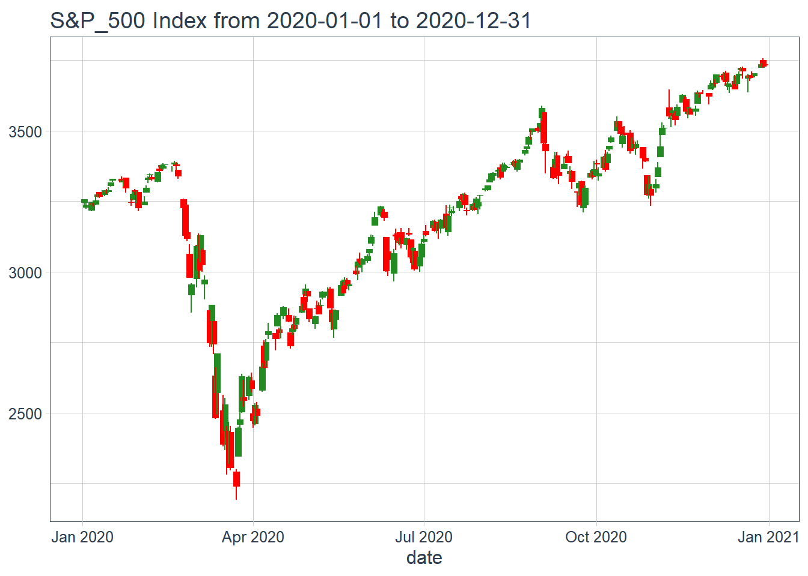
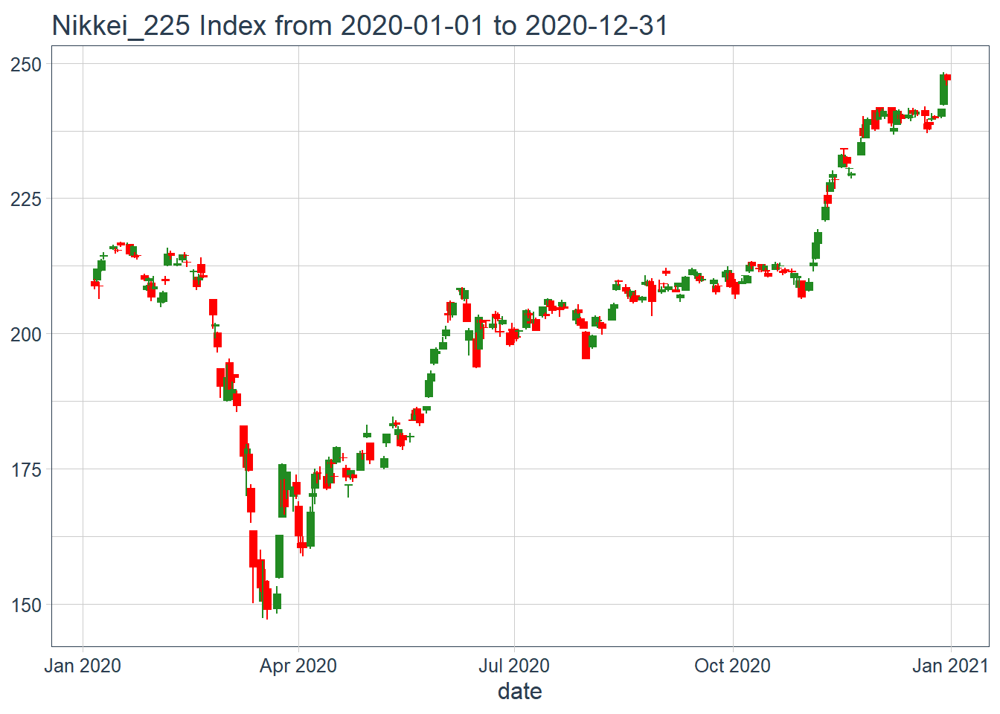
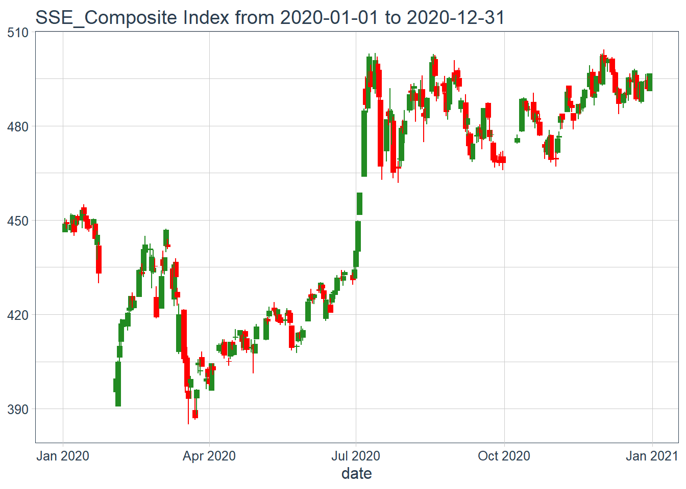
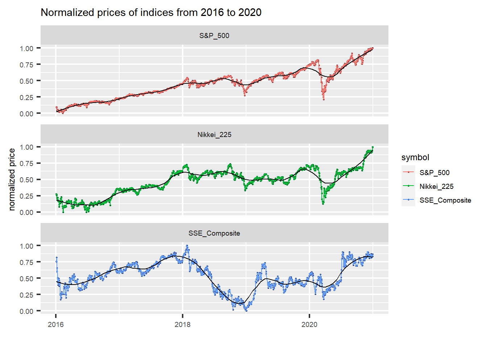
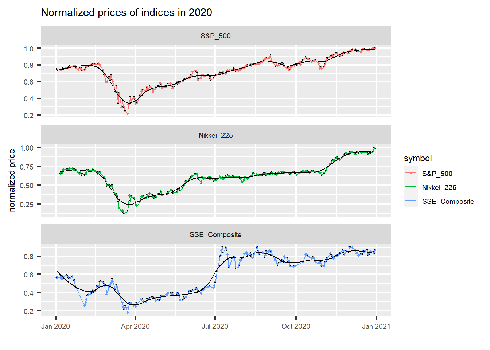
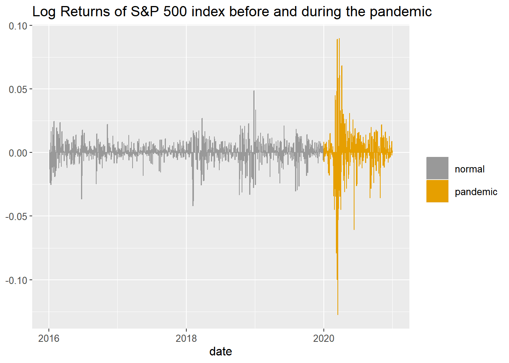
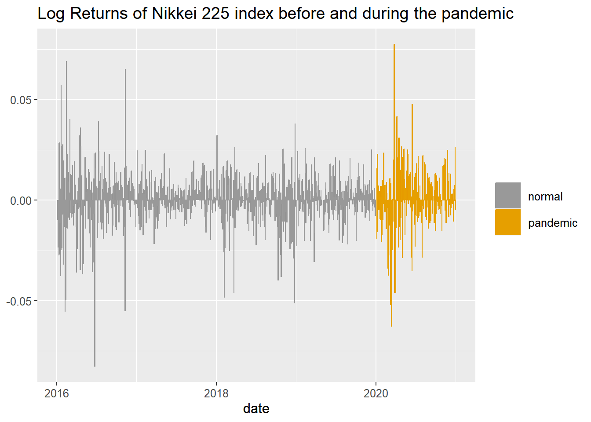
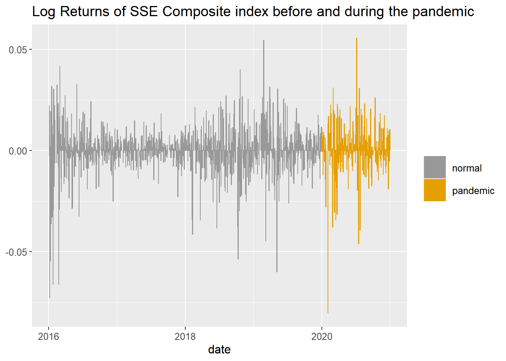

Chapter 4 Results
4.1 Part 1
4.1.1 1. Boxplot
One of the most significant statistics of an index is its volatility. For the very beginning, we would like to observe the volatilities of the three indices by creating a boxplot:
From the boxplot, we can observe that the SSE Composite is a bit more volatile with min and max values spanning the entire range from 0 to 1. However, the IQR of these three indices are actually quite similar, indicating that there is not an enormous difference in volatility among the three markets.
However, when we focus on the markets during the pandemic, we can observe that the SSE Composite becomes more volatile with a significantly larger IQR comparing with the other two indices. Meanwhile, we also noticed that, although the S&P 500 and the Nikkei 225 seem to be less volatile, both of these two indices have significantly more amount of outliers. While the Nikkei 225 index has both large and small outliers, all of the outliers of S&P 500 are smaller than \(Q_1 - 1.5*IQR\).
4.1.2 2. Candlestick Charts
To further observe the trends of the indices during the pandemic, we adapted a popular type of diagram when it comes to the stock analysis, the Candlestick Charts. For the purpose of tidyness, we created a function to produce the candlestick chart for the given index and time range.

For the candlestick chart of S&P 500 index in 2020, we can easily notice the drop from approximately the end of February to end of March, which is when the pandemic hit. The market shrank by approximately thirty percent within a month. If we observe the chart carefully, we can notice that there exist noticable gaps between some trading days, indicating that the market was continuously impacted even after it was close. The daily “candles” during this period were also significantly longer than the others, indicating a volatile market. However, we can notice that the market recovered gradually in the following six months and continued with a growing trend.

Similar with the S&P 500, the Japanese market represented by Nikkei 225 index also took a significant impact from Covid-19 during February and March in 2020. The number of green bars in this chart during the pandemic period are even less than the ones in the previous chart of S&P 500 index. However, the average length of each “candle” of Nikkei 225 is shorter than the one of S&P 500. This shows that the Japanese market shrank in a more stable path. In addition, the price of the index recovered from the impact within only approximately 4 month, which is shorter than the US market.

SSE Composite index, on the other side, has a very different trend comparing with the other two indices. Although there is a drop in price between February and March, the market rebounded back to previous prices during the February. After April, the market gradually has recovered with an upward trend until July, when a significant boost happened to the local market. This boost might be caused by the local policy of opening up after the quarantines. Overall, the trend of SSE Composite is different, and the volatility of the Chinese market was increased due to the potential stimulation of policies.
4.1.3 3. Time Series Line charts

By aligning the three indices together, there are several things that we can easily notice. First of all, the S&P 500 index is the most stable index with a smooth upward trend line, while the SSE Composite is obviously more unstable in the last five years. In addition, the US market and Japanese market performs very similar in the general trends if we compare the two smooth lines. Lastly, the pandemic contributed to the largest drop of S&P 500 and Nikkei 225 in 5 years. However, the drop in SSE Composite caused by the pandemic was relatively insignificant comparing with the overall performance of SSE Composite in 5 years.
To give the impacts of Covid-19 on markets a closer look, we focus on the data in 2020 and created another similar plot:

With the zoomed data, we can observe that although the overall trends of the markets are similar, all dropped before April and turned upward, the S&P index and the Nikkei 225 index shares more similarity when it comes to the shapes and detailed trends of the prices in 2020. From this plot, we can better infer that the Chinese equity market was less influenced by the Covid-19 pandemic, while both the US market and the Japanese market were influenced by the pandemic negatively in a similar way.
4.1.4 Returns
Another method of displaying volatility and comparing impacts from the pandemic across three markets is to use daily returns. In the following part, the log daily returns of the three indices are plotted separately to be observed.

In this plot, we observed a clear increase in volatility during the Covid-19 pandemic. Before 2020, the log returns are represented with grey vertical bars and has a relatively low range. After the pandemic hit the market, the amplitude of log returns increased by a large amount for several month till it drop back down to the normal level.

From the return plots, we can observe that, although Nikkei 225 looks similar with S&P 500 in previous plots, it is still more volatile in normal days. If we look at the return plots along, we can say that the Japanese market is actually not impacted as severe as the US market.

While the Nikkei 225 still has obvious downward clusters in daily returns, we can see that such clusters are even smaller in the return chart of SSE Composite. The volatility of SSE Composite’s daily returns remained on the approximately same level before and during the pandemic. Hence, from this graph, we can further infer that the Chinese market was the least influenced one by the pandemic among the three markets.